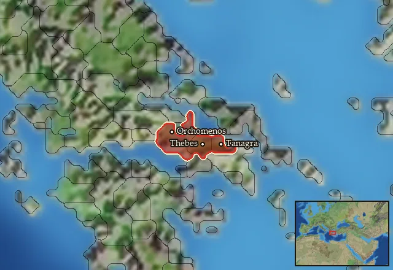

RTR: Imperium Surrectum
RTR: Imperium SurrectumRIS wiki › mercenaries
Boeotia
← all mercenary pools · wiki index
Mercenary pool: 9 units for hire in 3 regions.

Mercenaries
| Unit | Cost (dn) | Experience | At start | Most in pool | Added per turn | Who can hire | |
|---|---|---|---|---|---|---|---|
| Mercenary Boiotian Thureophoroi | 3,313 | 0 | 1 | 2 | 0.1993–0.3986 | Any faction | |
| Mercenary Karian Light Infantry | 3,661 | 1 | 1 | 2 | 0.1803–0.3607 | Only Boeotians | |
| Mercenary Pisidian Thureophoroi | 3,573 | 1 | 0 | 1 | 0.0407–0.0813 | Only Boeotians | |
| Mercenary Boiotian Hoplites | 3,414 | 0 | 1 | 2 | 0.1934–0.3868 | Any faction | |
| Mercenary Karian Heavy Infantry | 5,256 | 3 | 1 | 1 | 0.1256–0.2512 | Only Boeotians | |
| Mercenary Pisidian Javelinmen | 3,112 | 1 | 1 | 1 | 0.2121–0.4243 | Only Boeotians | |
| Mercenary Pamphylian Heavy Javelinmen | 3,216 | 1 | 1 | 1 | 0.2053–0.4106 | Only Boeotians | |
| Mercenary Tarantine Cavalry | 4,002 | 1 | 1 | 2 | 0.165–0.3299 | Any faction | |
| Mercenary Xystophoroi | 4,580 | 2 | 1 | 1 | 0.1441–0.2883 | Any faction |
Regions (3)
Boiotia · Poimandris · Thebai